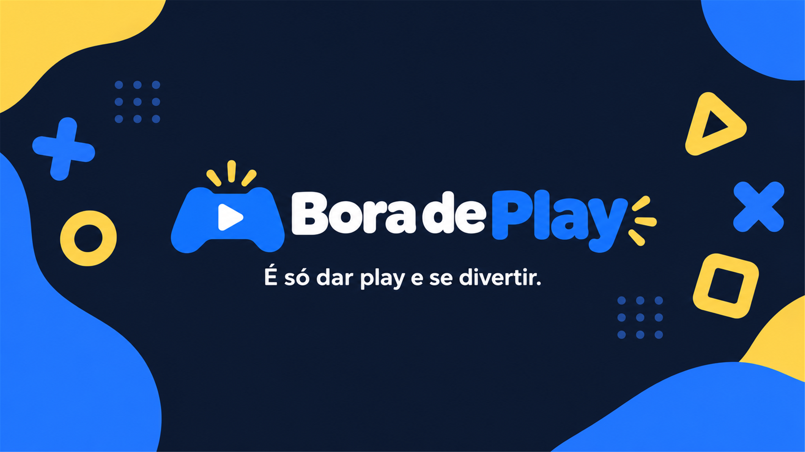

Entenda o projeto
Port, recompilação, remake e emulador são coisas diferentes. A ficha explica o tipo e o alcance de cada iniciativa.
A diversão não precisa ficar presa a um console. Descubra projetos que levam jogos para o PC, entenda como funcionam e veja como começar.
Explorar catálogoÉ só dar play e se divertir.
O catálogo aponta para os autores. Downloads e instruções vêm das fontes oficiais de cada projeto.
Port, recompilação, remake e emulador são coisas diferentes. A ficha explica o tipo e o alcance de cada iniciativa.
Alguns projetos exigem arquivos de uma cópia original do jogo. A ficha resume as exigências informadas pelo autor.
Confira passos, referência revisada e limitações. Estrelas e atividade no GitHub não comprovam jogabilidade.